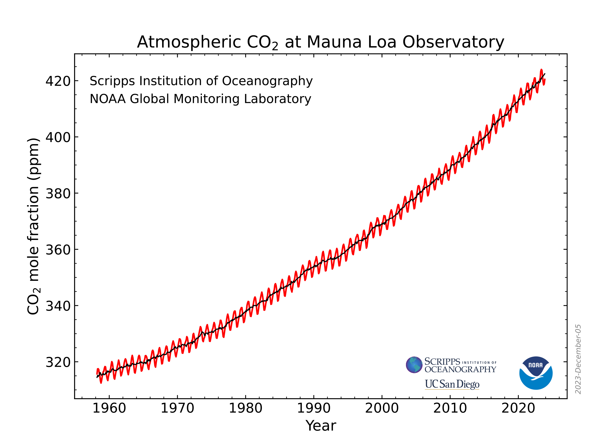
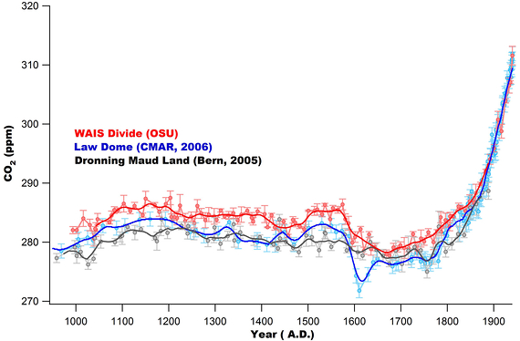
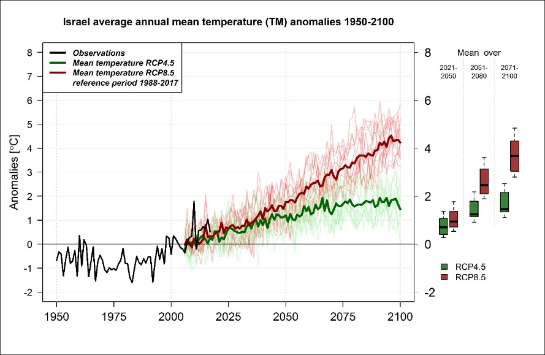
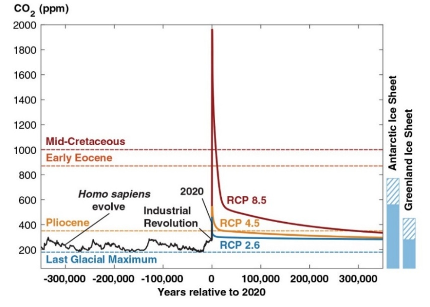
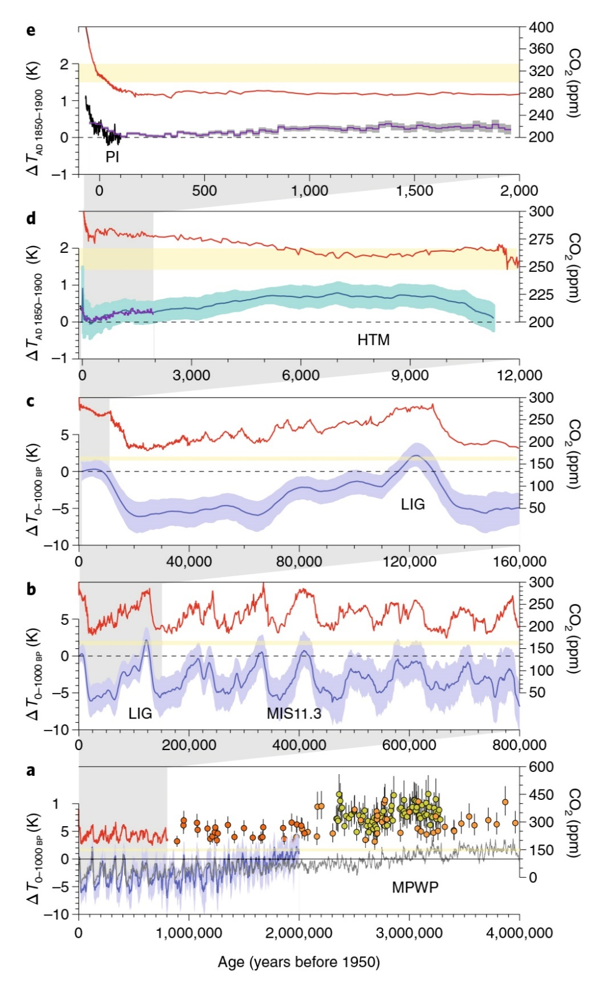
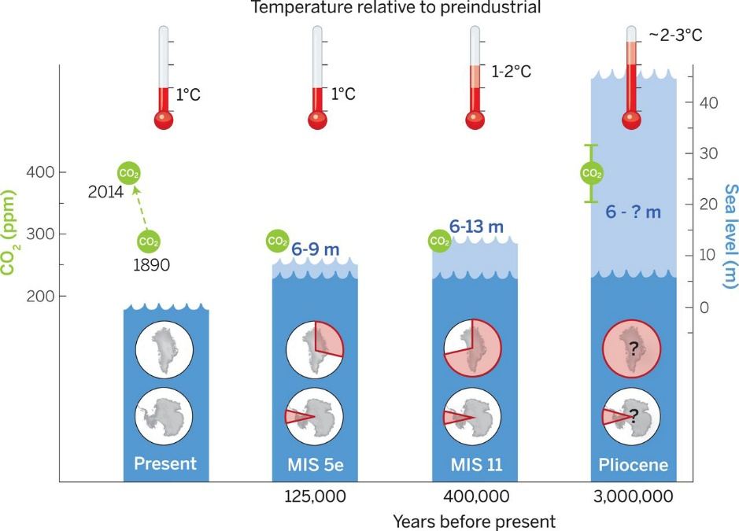

”The basic science is very well established;
it is well understood that global warming is due to greenhouse gases.
What is uncertain is projections about specifics in the next few
decades,
by how much will the climate change.“ - Mario J. Molina
6. התחממות גלובלית ושיבוש האקלים#
ההתחממות הגלובלית והקשר שלה לפעילות האדם עומדים בשנים האחרונות בלב הדיון הציבורי העולמי ובחזית המחקר האקלימי.[1] קיים קונצנזוס מדעי רחב כי חציית רף ההתחממות של 1.5 מעלות צלזיוס ויותר מעל הממוצע בתקופה הקדם-תעשייתית,[2] תוביל לפגיעה אקולוגית חמורה ועלייה בתכיפותם וחומרתם של ארועי קיצון,[3] לפגיעה ניכרת באיכות החיים של בני אדם על פני כדה“א (בעיקר בארצות העניות)[4] ויתכן שגם בתוחלת החיים שלהם,[5] מה שעלול להוביל לגלי הגירה המוניים[6] ואולי כבר גורם לחלק מגלי ההגירה העכשוויים.[7] פרק זה דן בתצפיות שהובילו להכרה בכך שכדור הארץ מתחמם ועלול להמשיך להתחמם בעשורים הבאים, וכן בגורמים האפשריים להתחממות הגלובלית (6.1). בעקבות ניסויים ומודלים חישוביים מרבית חוקרי האקלים חושבים שהצטברות גזי החממה באטמוספרה מעבר לרמתם הטבעית היא הגורם העיקרי להתחממות הגלובלית העכשווית, הצטברות אותה הם מייחסים לפעילות האדם מאז המהפכה התעשייתית, מה שגורם לכך שכדור הארץ נמצא במצב של חוסר איזון אקלימי. כלומר, יותר חום נקלט על פני השטח של כדור הארץ בהשוואה לחום הנפלט אל החלל החיצון (6.5-6.1).[8] הפרק דן גם בשינויי אקלים טבעיים שהתרחשו בעבר ולא היו קשורים לפעילות האדם (6.7), בהשפעות שינויים אלו על הסביבה ועל האינטראקציה בין שינויי האקלים הטבעיים והשינויים האנתרופוגניים, ובהשלכות ההתחממות הגלובלית על סביבת האדם בשנים הבאות, בדגש על עליית מפלס הים (6.8). נסיים את הפרק עם סקירה של לקחים כלליים (6.9) ובפרקים הבאים נדון בקשר בין ההתחממות הגלובלית לבין תהליכים סביבתיים אחרים.
הקשר בין ריכוז גזי חממה וטמפרטורת פני השטח של כדור הארץ#
המחקר שקשר בין ריכוז גזי חממה (בעיקר פד“ח (פחמן דו חמצני – \(CO_2\)) והתחממות כדור הארץ החל לפני כ-200 שנה.[9] בשנת 1824 פרסם ז’אן-בפטיסט פורייה (Fourier), מגדולי המדענים של המאה התשע עשרה, מחקר שהראה כי מאזן הקרינה של כדור הארץ מחייב שטמפרטורת פני השטח שלו תהיה נמוכה ב-33 מעלות צלזיוס (מינוס C18°) מערכה בפועל (שהיה אז C15°).[10] סדרה של ניסויי מעבדה שנערכו במאה ה-19 הראו שלאטמוספרה יש יכולת לבלוע את קרינת השמש ולהתחמם. בשנת 1856 הראתה יוניס ניוטון-פוט (Newton-Foote) כי לאדי מים ולפד“ח יש יכולת לבלוע אור שמש ולהתחמם,[11] ובשנת 1869, ג’והן טינדל (Tyndall) הראה כי הבליעה של קרינת אור תת-אדומה (infrared)[12] היא שגורמת להתחממות האוויר. זאת הקרינה שכדור הארץ פולט לחלל אחרי שבלע חלק מהקרינה המגיעה מן השמש. במילים אחרות, גזי החממה (בעיקר אדי מים ופד“ח, ראו בהמשך) בולעים את הקרינה הנפלטת מכדור הארץ, מחממים את האטמוספרה ובכך תורמים להתחממות פני השטח של כדור הארץ. התחממות זו יכולה להסביר את הפער שמצא פורייה בין הטמפרטורה שחישב לבין הטמפרטורה בפועל של פני כדור הארץ. בשנת 1896 פרסם סוונטה אהרניוס (Arrhenius), חתן פרס נובל בכימיה, מודל אקלימי פשוט המנבא שעליית ריכוזי פד“ח באטמוספרה כתוצאה משריפה של פחם תגרום להתחממות פני השטח של כדור הארץ.[13] מחקרים אלו היו ראשיתה של הכרת התופעה שאנו קוראים לה כיום ”אפקט החממה“.
המנגנון של אפקט החממה קיבל תמיכה כארבעים שנה לאחר מכן, כאשר בשנת 1938 גיא קלנדר (Callendar) הראה שיש קשר בין שריפת פחם, עליית ריכוז גזי החממה והטמפרטורה בכדור הארץ.[14] במסגרת השנה הגיאופיזית של האו“ם (1.7.1957 – 31.12.1958) החלה קבוצת חוקרים בראשותו של צ’ארלס קילינג (Keeling) לתעד את העלייה בריכוזי פד“ח באטמוספרה בתחנת מחקר הממוקמת בהוואי, הרחק מכל מקורות פליטה תעשייתיים (איור 6.1א).[15] העלייה בריכוז פד“ח באטמוספרה הפריכה טענות שעלו בשנות החמישים שהאוקיינוס ו/או הביוספרה יבלעו את כל הפד“ח שנפלט משריפת דלקים פוסיליים. בשנות השבעים התפרסמו כמה עבודות שטענו כי לגורמים שאינם גזי חממה יש משקל עיקרי בקביעת הטמפרטורה של פני השטח: (1) ”שקיפות“ האטמוספרה (נוכחות או אי נוכחות של אירוסולים)[16] ו-(2) מידת ההחזר של קרינת השמש (אלבדו) מפני השטח ומעננים.[17] אולם, המודלים שניבאו בצורה טובה יותר את השינוי בטמפרטורה של כדור הארץ, היו כאמור המודלים שהדגישו את חשיבותם של גזי החממה (בעיקר פד“ח). בין אלה ראוי לציין את עבודותיו של מנאבי (Manabe) שניבאו את ההשפעה של הכפלת ריכוז הפד“ח על אקלים כדור הארץ.[18] מנאבי אף זכה בפרס נובל בפיזיקה על תרומתו להבנת ההשפעה של אפקט החממה על אקלים כדור הארץ. החל מאותה תקופה התקבע בספרות המקצועית המונח ”אילוץ קרינתי“ (radiative forcing)[19] על מנת לתאר בצורה כמותית את תרומתם של גזי חממה וגורמים אחרים למאזן האנרגיה של כדור הארץ. ההערכה היא שהאילוץ הקרינתי של גזי החממה בגג הטרופוספרה בשנת 2025 גדול ב-3.69 וואט למטר מרובע בהשוואה ל-1850.[20]
מודלים לחיזוי אקלים#
בשנות השמונים החלה קבוצת חוקרים בהובלת ג’יימס הנסן (Hansen) מהמרכז לחקר אקלים של נאס“א לבנות מודלים חישוביים המנבאים את העלייה בטמפרטורה של פני כדור הארץ בעקבות העלייה המדודה בריכוזי גזי חממה באטמוספרה, תוך התחשבות גם בגורמים אחרים כמו נוכחות אירוסולים באטמוספרה וכן עננות.[21] הנסן אף הופיע בפני וועדה של הקונגרס האמריקאי בניסיון לעורר מודעות לסכנה הצפויה לאנושות אם המגמה של עליית ריכוז גזי החממה באטמוספרה תימשך.[22] איור 6.1ב מציג השוואה בין הניבוי של המודל של הנסן (בשלושה תרחישי פליטות) והטמפרטורה בפועל שלושים שנה לאחר פרסומו. עד שנת 2014 תרחיש C (הפסקת פליטות פד“ח בשנת 2000 – תרחיש רחוק מאד מהמציאות) תיאר בצורה הטובה ביותר את העלייה המתועדת בטמפרטורה, אך בשלוש השנים הבאות, תרחיש B, הקרוב יותר למצב פליטות גזי החממה האמיתי, עושה עבודה טובה יותר. בשנת 1989 פרסם סטיבן שניידר (Schneider) מאמר שריכז את הידע בנושא עד לאותה התקופה וצפה באופן מרשים את התופעות והשינויים שהתרחשו בעשורים שחלפו מאז כתיבתו.[23] איור 6.1ג מציג את סטיית הטמפרטורה בין השנים 1850-2023 מהממוצע של השנים 1850-1900, ומדגים שעליית הטמפרטורה התרחשה במספר קפיצות, האחרונה שבהן החלה ב-1980 ונמשכת עד 2024. כלומר, למרות שהמודלים מנבאים היטב את מגמת העלייה בטמפרטורה הם אינם מצליחים לתאר תהליכים של אגירת חום (למשל על ידי האוקיינוסים שלהם יש קיבול חום גדול) המצליחים לעכב זמנית את עליית הטמפרטורה העולמית.
עם השנים, חל שיפור משמעותי ביכולת התצפיתית, בין היתר בזכות השימוש בלוויינים. בנוסף, המודלים האקלימיים השתכללו ושיפרו את הרזולוציה המרחבית, מה ששיפר את יכולת הניבוי שלהם.[24] חשוב לציין שלמרות השיפור ברזולוציה המרחבית, עדיין חסרה הבנה פיזיקלית של מספר תהליכי מפתח הקשורים להתחממות גלובלית, ובעיקר הבנת ההשפעה הישירה והעקיפה של אירוסולים באטמוספרה. חוסר הבנה זה פוגע ביכולת הניבוי של המודלים הקיימים.[25] בעשור האחרון החלו לאמץ גישה חדשה על מנת לקבוע את ההסתברות של שינויי טמפרטורה ושכיחות אירועי קיצון במקומות שונים בעולם באמצעות הרצה של מודלים אקלימיים עם ובלי העלייה בריכוזי גזי החממה (attribution science).[26] ראוי לציין שחלק מהעבודות, בעיקר אלה שמתפרסמות זמן קצר אחרי ארוע אקלימי חריג עלולות להיות פחות מדויקות.[27] כמו כן, נעשה שימוש גובר והולך בלמידת מכונה על מנת להקטין את אי הוודאות של תחזיות המודלים.[28]
העדויות המצטברות בנושא התחממות גלובלית הובילו לסדרה של כינוסים בינלאומיים בהובלת האו“ם החל מ-1992 (COPs), במטרה לעודד מאבק בהתחממות הגלובלית (UNFCCC).[29] בנוסף, החל מ-1990 ומידי כמה שנים החל הפאנל הבינלאומי של מומחי אקלים של האו“ם (IPCC) לפרסם דוחות,[30] כאשר האחרון שבהם פורסם ב-2023.[31] למרות כל המאמצים שנעשו בשנים האחרונות וההזהרות החוזרות ונשנות של מומחי ה-IPCC, ריכוזי גזי החממה העיקריים (פד“ח, מתאן, חנקן דו-חמצני ו-~6~SF)[32] באטמוספרה ממשיכים לטפס (ראו פרוט לגבי פד“ח ומתאן בפרק 5), ונכון לסוף 2024 אינם מראים סימנים של היפוך מגמה.[33] כישלון זה יביא ככל הנראה להמשך ההתחממות הגלובלית, והצפי הוא שהיא תגיע כבר בשנים הקרובות ל-C1.5° מעל הטמפרטורה הממוצעת בתחילת המאה העשרים.[34]
{kind=link}

Fig. 59 איור 6.1: נתונים מרכזיים בדיון על התחממות גלובלית. (א) תיעוד העלייה בריכוז פד“ח באטמוספרה בתחנה של הוואי (Mauna Loa) החל בסוף שנות החמישים של המאה הקודמת.#
מקור – NOAA (2023) https://gml.noaa.gov/ccgg/trends/; Reprinted with permission. (ב) בחינה מחודשת בשנת 2018 של המאמר של הנסן משנת 1988. מקור – Hausfather, Z. et al. (2020) https://doi.org/10.1029/2019GL085378; ©2019. American Geophysical Union. All Rights Reserved. Reprinted with permission. (ג) חריגות של הטמפרטורה הממוצעת בכדור הארץ משנת 1850 ועד 2025 בהשוואה לממוצע של השנים 1850-1900. מקור – NOAA (2023) https://gml.noaa.gov/ccgg/trends/; Reprinted with permission. (ב) בחינה מחודשת בשנת 2018 של המאמר של הנסן משנת 1988. מקור –
Hausfather, Z. et al. (2020) https://doi.org/10.1029/2019GL085378; ©2019. American Geophysical Union. All Rights Reserved. Reprinted with permission.
(ג) חריגות של הטמפרטורה הממוצעת בכדור הארץ משנת 1850 ועד 2025 בהשוואה לממוצע של השנים 1850-1900. מקור –
Global Temperature Report for 2025 - Berkeley Earth, https://berkeleyearth.org/global-temperature-report-for-2025/. All Rights Reserved. Reprinted with permission.
(ב)
(ג)
מדוע עדין ניטש הוויכוח על התחממות גלובלית#
בעשורים האחרונים ניטש ויכוח בין רוב גדול של חוקרי האקלים לבין מיעוט חוקרים לגבי התרומה של פליטות גזי חממה על ידי בני אדם להתחממות הגלובלית (שעל קיומה אין כמעט ויכוח). מרבית החוקרים טוענים שרק העלייה בריכוזים של גזי חממה עקב פעילת אנושית יכולה להסביר את עליית הטמפרטורה בעשורים האחרונים ושאין גורמים אחרים כמו למשל שינויים בקרינת השמש[35] היכולים להסביר את עליית הטמפרטורה. לעומתם, מיעוט החוקרים חושבים שתרומת גזי החממה פחותה ולמעשה יתכן שקיים קשר הפוך: עליית הטמפרטורה של מי האוקיינוסים גורמת לירידה ביכולתם להמיס פד“ח, ולכן חלקו נפלט לאטמוספרה ומעלה את ריכוזו שם. הם טוענים שיש למצוא גורמים נוספים התורמים להתחממות הגלובלית. מצד אחד ישנן שתי תצפיות המגמדות לכאורה את חשיבותם של גזי החממה בהתחממות הגלובלית: (1) תרומת גזי החממה שהתווספו מאז המהפכה התעשייתית למאזן הקרינה של כדור הארץ קטנה מאד ביחס לסך האנרגיה המגיעה מן השמש (למזלנו). סך כל האנרגיה המגיעה לפני השטח של כדור הארץ מהשמש היא כ-340 וואט למטר רבוע (הקבוע הסולרי solar constant –).[36] לעומת זאת, ההערכות של IPCC לתרומת גזי החממה העודפים (בין 280 לפני המהפכה התעשייתית, ל-367 חלקים למיליון ב-1998), היא כ-2.4 וואט למטר רבוע,[37] כלומר פחות מאחוז מקרינת השמש; (2) ריכוז פד“ח, גז החממה העיקרי באטמוספרה עלה מערכים של 280 חלקים למיליון (כ-0.03%) לפני המהפכה התעשייתית לערכים של כ-420 חלקים למיליון (כ-0.04%) ב-2022.
אולם כפי שהראו פורייה, ניוטון-פוט וטינדל נוכחות גזי החממה באטמוספרה לפני העידן התעשייתי הסבירה את הפער שבין הטמפרטורה המחושבת ממאזן הקרינה והטמפרטורה בפועל של כדור הארץ (פער של 33 מעלות צלזיוס). מקובל לחשוב שתרומת פד“ח לפער הזה היא כ-25% (ראו פרוט בסעיף 6.4), כלומר עלייה של ריכוזי פד“ח מ-0 חלקים למיליון ל-280 חלקים למיליון תרמה לעליה של כ-8 מעלות צלזיוס. כלומר, גם ריכוז של 280 חלקים למיליון (0.03%) משפיע בצורה משמעותית על הטמפרטורה של כדור הארץ. בנוסף, בחינה של ריכוזי פד“ח באטמוספרה כפי שנמדדו בשיטות שונות באלף השנים האחרונות (איור 6.2א)[38] וב-800 אלף השנים האחרונות (איור 6.2ב) ממחישה את האנומליה שבה אנחנו נמצאים מבחינת ריכוזי פד“ח (מעל 400 חלקים למיליון) בעקבות העלייה הדרמטית של ריכוזי פד“ח באטמוספרה מאז המהפכה התעשייתית. שינוי דרמטי ומהיר כזה בקנה מידה עולמי הוא חריג ובמידת סבירות גבוהה גורר שינויים דרמטיים על פני השטח של כדור הארץ, ובכללם שינויי טמפרטורה.
{kind=link}

Fig. 60 איור 6.2: (א) שינויים בריכוז פד“ח באטמוספרה ב-1000 השנים האחרונות כפי שנמדדו בבועות אוויר בשלושה גלעיני קרח מאנטארקטיקה.#
מקור – Ahn et al (2012) https://agupubs.onlinelibrary.wiley.com/doi/10.1029/2011GB004247 Reprinted with permission by AGU ריכוזי פד“ח ממוצעים ממספר גלעיני קרח ב-800 אלף השנים האחרונות כפי שהורכבו על ידי סוכנות החלל האמריקאית. על פי – NASA - https://climate.nasa.gov/climate_resources/24/graphic-the-relentless-rise-of-carbon-dioxide/
Ahn et al (2012) https://agupubs.onlinelibrary.wiley.com/doi/10.1029/2011GB004247 Reprinted with permission by AGU
ריכוזי פד“ח ממוצעים ממספר גלעיני קרח ב-800 אלף השנים האחרונות כפי שהורכבו על ידי סוכנות החלל האמריקאית. על פי –#
NASA - https://climate.nasa.gov/climate_resources/24/graphic-the-relentless-rise-of-carbon-dioxide/
(ב)
סוגי גזי החממה#
למרות שרוב הדיון בגזי חממה מתמקד בפד“ח, הוא איננו גז החממה היחיד. חשוב לציין את גזי החממה העיקריים הנוספים ואת תרומתם היחסית להתחממות כדור הארץ.[39] בדיון על גזי החממה יש להתחשב בריכוזם הטבעי (לפני התערבות האדם), בריכוזם העכשווי, בקצב העלייה בריכוזם בעבר בהווה ובעתיד, בזמן השהות שלהם באטמוספרה וביכולתם לבלוע קרינה אינפרה-אדומה[40] (Global Warming Potential - GWP).[41] כמו כן, יש להתייחס אליהם בשני הקשרים.[42] הראשון הוא אפקט החממה הטבעי, שגורם לטמפרטורת כדור הארץ להיות גבוהה בערך ב-33 מעלות קלווין מהערך שחישב פורייה ב-1824. ההקשר השני הוא אפקט החממה האנתרופוגני[43] שגורם לכדור הארץ להתחמם בעוד 2.4 מעלות קלווין (מהן צריך להפחית כ-1.2 מעלות עקב קירור הנגרם על ידי אירוסולים). לפי חישוביו של מרק ג’יקובסון (Jacobson), 66% מאפקט החממה הטבעי נתרמים על ידי אדי מים, 25% על ידי פד“ח, 6.2% על ידי אוזון (ozone – \(O_3\)), 1.4% על ידי חמצן דו חנקני (nitrous oxide – \(N_2O\)), 0.6% על ידי מתאן, 0.6% על ידי חמצן, והשאר על ידי גזים אחרים וחלקיקים מרחפים באוויר. לעומת זאת, אפקט החממה האנתרופוגני נגרם ברובו על ידי פד“ח (45.7%), פיח וחלקיקי חומר אורגני כהים המרחפים באוויר (16.3%), מתאן (12%)[44], מתיל כלוריד (9%), אוזון (8.8%), חמצן דו חנקני (4.3%),[45] חימום ישיר מפעילות אנושית (3.7%). אדי מים תורמים רק כ-0.23%, אם כי לאחרונה נטען שתרומתם נמצאת במגמת עליה.[46] חשוב לשים לב שפרסומים אחרים הגיעו לאחוזי תרומה שונים במקצת, כולל תרומה לא מבוטלת מתרכובות CFC (ראו פרק 11).
גורמים נוספים לשינויי אקלים#
כאמור, יש הסכמה בין מרבית חוקרי האקלים כי פד“ח, מתאן (שבריכוזו הנוכחי הוא גז חממה יעיל הרבה יותר מפד“ח)[47] וגזי חממה אחרים גורמים לעליית טמפרטורת פני השטח של כדור הארץ ואילו גורמים אחרים כמו שינויים בקרינת השמש אינם יכולים להסביר את ההתחממות.[48] אולם, עדיין לא ברורה מידת הרגישות[49] של טמפרטורת פני השטח להשפעות גזי החממה ולא ברור הקשר בין עלייה בריכוזם לבין שכיחותם של אירועי קיצון.[50] זאת מאחר ויש גורמים נוספים המחלישים או מגבירים את תרומתם של גזי החממה: (1) שינוי בהחזר הקרינה של השמש (אלבדו) עקב המסת קרחונים יבשתיים (למשל בגרינלנד)[51] וימיים (בים הארקטי);[52] (2) זיהום אוויר;[53] (3) שינויים בלחות האוויר (אוויר יבש מתחמם יותר);[54] (4) התקררות של הסטרטוספרה העליונה;[55] (5) חלקיקים אטמוספריים המחזירים ישירות חלק מהקרינה המגיעה לכדור הארץ לפני שהיא מגיעה לפני השטח, ומשפיעים על החזר הקרינה באופן עקיף באמצעות השפעתם על יצירת עננים.[56] היכולת לאמוד את ההשפעה של סוגי עננים שונים על מאזן הקרינה של כדור הארץ היא מוגבלת, והיא אחד הגורמים המרכזיים שתורמים לאי הוודאות בניבוי של שינויי האקלים.[57] כך לדוגמא, לאחרונה נטען שירידה בעכירות האטמוספירה עקב ירידה בריכוז חלקיקים מרחפים ( aerosol optical depth – AOD – ראו פרק 11) ושינויים בעננות גרמו לעליה של כ-0.88 וואט למטר רבוע לעשור בין 1984 ו-2018; קצב שאינו נופל מתרומת העלייה בריכוזים של גזי החממה.[58] מחקר נוסף שהתפרסם ב-2025 דיווח על ירידה משמעותית בכמות ענני סופות ב-24 השנים האחרונות, מה שהגדיל את כמות קרינת השמש שהגיעה לפני השטח של כדור הארץ.[59] ישנה גם טענה שפעילות קוסמית משפיעה על יוניזציה של האטמוספרה וגורמת להיווצרות חלקיקים המשמשים כגרעיני התעבות של עננים ימיים, ודרכם על מידת החזר הקרינה של השמש.[60] טענה זו, שעדין לא נבדקה לעומק, היא בבחינת הצעה ראשונית בלבד.
חשוב לציין ששינויים ביעילות פיזור החום על פני כדור הארץ, כמו למשל שינויים בזרמי האוקיינוס וברוחות גלובליות,[61] יכולים למתן או להחריף את ההתחממות הגלובלית באזורים שונים.[62] למשל, החלשות בעוצמת הסירקולציה האטמוספרית בחצי הכדור הצפוני המתבטאת בין היתר בירידה בפעילות של תא הדלי (Hadley Cell - ראו פרק 11).[63] תהליכים אלה ואחרים גורמים לתופעות של גלי חום קיצוניים באירופה[64] ובדרום-מזרח אסיה,[65] ולעומתם ההתקררות במרכז אירו-אסיה בחורף.[66] בנוסף לשינויי אקלים באזורים שונים יש לעיתים קרובות תופעות בלתי צפויות הנובעות מתהליך הנקרא טלקונקציה (teleconnections),[67] המתאר מצבים של קישור בין זרימות אטמוספריות שונות (למשל גלי רוסבי[68] וזרם הג’ט[69]) או גורמים אחרים.[70] כתוצאה מכך נוצרת השפעה הדדית בין אזורים הנמצאים במרחק אלפי קילומטר אחד מהשני. חוסר הבנה של ההשפעה הדדית הזאת מעוררת לא פעם פקפוק בקהל הרחב בתופעת ההתחממות הגלובלית. כך למשל, ההתחממות המואצת של האזור הארקטי גורמת לקור קיצוני בחורף באזורי האקלים הממוזג כגון בצפון אמריקה וכנראה גם בצפון אירופה וצפון אסיה, זאת כיוון שהאוויר הארקטי מצליח לנוע דרומה ביתר יעילות.[71]
למרות ההסתייגויות הללו, גם ההערכות המינימליות של ה-IPCC צופות התחממות מעל 1.5° (קלווין/צלזיוס) בהשוואה לסוף המאה התשע עשרה, אלא אם פליטות גזי החממה יופסקו בשנים הקרובות ובנוסף כמויות ניכרות של פד“ח יסולקו מהאטמוספרה.[72] כבר כיום מצטברות עדויות לכך שההתחממות הגלובלית גורמת להתחממות מי הים, שמעלה בתורה את תכיפותן ועוצמתם של סופות הוריקן,[73] טורנדו וטייפון עד כדי תכיפות דומה לזו שבתקופה החמה של ימי הביניים.[74] כמו כן, ההתחממות מגבירה את התמדתן (שמירת עוצמתן) ואת האצת קצב התחזקותן של הסופות. גורמים אלה מקשים על קיום מערך התראות אמין.[75] מצד שני, יש הטוענים כי הנזק שנגרם בארצות הברית עקב הוריקנים בין 1900 ל-2017 לא השתנה, לאחר ביצוע תיקון של התוצאות בהתאם לשינויים בצפיפות הישובים, גודלם וערך המטבע (תיקונים היכולים להוות מקור לטעויות).[76] גם תכיפותם של גלי חום קיצוניים[77] ושכיחותן ועוצמתן של סופות גשמים חזקות מתגברים,[78] בעיקר, אך לא רק, בגלל עליה בריכוזם של גזי החממה. ישנן גם עדויות לכך שההתחממות הגלובלית גורמת לעליה בשונות של ארועי גשם (precipitation variability).[79] דוגמא נוספת למידת המורכבות של תהליכים אלה ולהשפעה הדרמטית של ההתחממות הגלובלית על האקלים מופיעה במאמר שפורסם לפני כעשור.[80] המאמר תיעד את השפעת ההתחממות הגלובלית על תנודות במיקום של אזור ההתכנסות של דרום האוקיינוס השקט (SPCZ).[81] אזור ההתכנסות הוא אזור של גשמים מרובים ומיקומו במרחב קובע היכן ירדו גשמים והיכן יתפתחו תנאי בצורת. לפי המאמר, ההתחממות הגלובלית גורמת לדחיקת ה-SPCZ לכיוון קו המשווה, כאשר מיקומו באזור זה גורם לאירועי מזג אוויר קיצוניים במיוחד (שיטפונות ובצורות) בכל המרחב של דרום האוקיינוס השקט. כמו כן, בנוסף להשפעותיה האקלימיות, שריפת דלקים פוסיליים האחראית על רוב העלייה בריכוזי גזי החממה,[82] גורמת לזיהום אוויר אשר מהווה אחד מגורמי התמותה והתחלואה העיקריים כיום (ראו פרקים 3 ו-11).[83]
שינויי אקלים במזרח התיכון ובישראל#
המזרח התיכון הוא אחד האזורים שנפגעו וצפויים להיפגע בצורה הקשה ביותר מהתחממות גלובלית.[84] שני המשתנים העיקריים המשקפים את שינויי האקלים בכלל ובמזרח התיכון בפרט הם שינוים בטמפרטורה (ממוצעת, תכיפות ועוצמת ארועי קיצון, בעיקר גלי חום), ושינויים במשקעים (כמות, תפרוסת שנתית, ארועי קיצון – בצורות וסופות). בחינה מדוקדקת של המצב מצביעה על כך שאכן חלק מרכזי מהמחסור בזמינות מים שפירים נובע משינויי אקלים, אולם חלק נוסף קשור לריבוי הטבעי הגבוה באזור ולהיערכות לקויה.[85] מרבית המחקר הרלוונטי שהתפרסם בנושא שינויי אקלים (טמפרטורה ומשקעים) נעשה בישראל ולכן נתמקד בו (ראו גם פרק 14). מספר מחקרים הראו שבמאה השנים האחרונות היתה שונות במשקעים במזרח התיכון ובארץ ישראל, אולם שהיא לא היתה קשורה בהכרח להתחממות הגלובלית של השנים האחרונות.[86] מצד שני, בעשורים האחרונים נראה שיש שינוי באופי המשקעים הנפרשים על פני פחות ימים ומגיעים בעוצמות גדולות יותר, ובנוסף, בעשור האחרון נמדדה ירידה במשקעים בצפון ישראל ועליה בדרום. בעשור האחרון תועדה גם עלייה מסוימת בטמפרטורה בהשוואה לסוף המאה העשרים, אם כי שנות החמישים-שישים של המאה עשרים היו גם הן חמות יותר משנות השבעים-שמונים (איור 6.3).[87] כמו כן, נמדדה עלייה בטמפרטורה של עונת החורף בעיקר באזור החוף וכן עלייה בשכיחות ובעוצמה של גלי חום.[88]
{kind=link}

Fig. 61 איור 6.3: השינוי בטמפרטורה הממוצעת השנתית בישראל ביחס לתקופת יחוס 2017-1988. ממוצע התצפיות (בשחור), ממוצע אנסמבל המודלים עבור תרחיש RCP4.5 (בירוק), ממוצע אנסמבל המודלים עבור תרחיש RCP8.5 (באדום).#
מקור – https://ims.gov.il/he/node/228 ; Reprinted with permission.
שנה
האם היו דברים מעולם?#
אחת השאלות שעולה לעיתים תכופות בהקשר של התחממות גלובלית היא ”האם היו דברים מעולם?“. את השאלה הזו צריך לחלק לשניים: 1) האם בעבר כדור הארץ היה חם כמו היום, ו-2) האם היו בעבר אירועים של התחממות בקצב מהיר מאוד כמו זו שאנחנו חווים היום ואם כן, מתי ומה גרם להם? בנוסף, חשוב גם להידרש לסוגיות כגון הרגישות לעליה בריכוזי גזי חממה.[90] חקר האקלים בעבר (paleoclimate) עושה שימוש בקשת רחבה של שיטות מחקר על מנת להתמודד עם השאלות הללו. חוקרים משתמשים בסוגים שונים של ארכיבים טבעיים (גלעיני קרח, משקעים ימיים ואגמיים, משקעי מערות, קרקעות קדומות, טבעות עצים, ועוד) וארכיבים אנתרופוגנים (מבנים עתיקים, ערים ותרבויות שקרסו, ועוד). בדוגמות מתוארכות ,שגילן ידוע, המגיעות מהארכיבים הללו הם מודדים מגוון גדול של משתנים אורגניים (למשל אבקני צמחים - pollen)[91] ואי-אורגניים (למשל איזוטופים יציבים של חמצן, מימן ופחמן).[92] לאחרונה פורסמו מספר מאמרים שהציגו את הידע העכשווי לגבי שינויי האקלים וריכוזי פד“ח באטמוספרה בעשרות מיליוני השנים האחרונות, ב-20 מיליון,[93] 65 מיליון[94] ו-66 מיליון[95] שנים. בנוסף התפרסמו מאמרים שניסו לשחזר את שינויי האקלים בתקופות זמן ארוכות אף יותר. מחקר אחר שיחזר את הטמפרטורה של כדור הארץ ב-485 מיליון השנה האחרונות[96] ומחקר נוסף בחן את השפעתה של פעילות טקטונית על ריכוזי פד“ח באטמוספרה במיליארד השנה האחרונות.[97] נמצא שבחלק מהתקופות החמות ריכוזי פד“ח באטמוספרה היו גבוהים ובחלק מהתקופות הקרות הם היו נמוכים. סיכום של מאה שנות מחקר מעלה שבעבר הרחוק היו מספר תקופות חמות במיוחד. נציין רק שתיים: לפני כ-56 מיליון שנה (PETM) [98] ולפני כ-100 מיליון שנה. בשתיהן מיקום היבשות על פני כדור הארץ היה שונה ממיקומן העכשווי וכתוצאה מכך מאפייני הזרימה באוקיינוסים ובאטמוספרה היו שונים וריכוזי הפד“ח היו גבוהים יותר,[99] הטמפרטורות בכדור הארץ היו גבוהות בהרבה לעומת ההווה (איור 6.4),[100] לא היה קרח בקטבים ומפלס הים היה גבוה בעשרות מטרים לעומת ההווה. כלומר, כדור הארץ והביוטה החיה על פניו שרדו תקופות חמות משמעותית בהשוואה לימינו. בנוסף, מחקרים רבים עסקו במאפייני האקלים גם בתקופות קרובות יותר לזמננו. למשל, בתקופת הפליוקן המאוחר (late Pliocene - לפני 3.3 – 3.0 מיליון שנה) שהיתה תקופה חמה בצורה מובהקת לעומת ההווה[101] וריכוזי פד“ח אז היו גבוהים בהשוואה להיום, אבל מיקום היבשות על פני כדור הארץ היה דומה למיקומן היום.[102]
בשמונה מאות אלף השנים האחרונות כדור הארץ חווה מספר מחזורים של שינויי אקלים (בערך כל 100,000 שנה), עם מעברים מתקופות קרות (תקופות קרח) לתקופות חמות, תקופות בין-קרחוניות.[103] למעשה, בשלושת מיליוני השנים האחרונות היו מעברים כאלה אולם בשלב מסוים חל שינוי בזמני המחזור, (MPT - ראו הפסקה הבאה). יתכן שבתקופות הבין-קרחוניות הקודמות (האחרונה ביניהן לפני כ-125 אלף שנה) הטמפרטורה הממוצעת של פני כדור הארץ הייתה דומה ואולי אף קצת גבוהה יותר מהנוכחית. יש עדויות להמסה נרחבת של כיפת הקרח בגרינלנד ובמערב אנטארקטיקה לפני כ-125 אלף שנה[104] והמסה משמעותית יותר בגרינלנד ובמערב אנטארקטיקה בתקופה הבין-קרחונית שלפני כ-400 אלף שנה[105] ויתכן שגם לפני כמיליון שנה.[106] אמנם אז היו הריכוזים של גזי החממה נמוכים לעומת ההווה, אולם מאפייני סיבוב כדור הארץ סביב השמש היו שונים (מחזורי מילנקוביץ« - Milankovitch).[107]
תקופה הנקראת ”מעבר אמצע הפלייסטוקן“ (MPT – Middle Pleistocene Transition) מספקת לנו תובנה חשובה לגבי שינויי האקלים הצפויים. בתקופת ”מעבר אמצע הפלייסטוקן“ שנמשכה בין 1.5 מיליון שנה ל 900 אלף שנה לפני ההווה, חלה התקררות עולמית (~4°C). ההתקררות היתה מלווה במעבר ממחזורי אקלים של 40 אלף שנה למחזורים של 100 אלף שנה בהם כדור הארץ עבר מתקופה קרחונית לבין-קרחונית וחזרה לתקופה קרחונית.[108] הסיבות לשינויים האקלימיים במהלך ה-MPT נחקרו רבות. לאחרונה התפרסמו מאמרים הטוענים שהסיבה העיקרית להתקררות הזאת היא הצטברות כמויות גדולות של קרח ימי סביב אנטארקטיקה שהובילה לסילוק פד“ח מהאטמוספרה (כיצד? – ראו פרק 10).[109] הצטברות הקרח סביב אנטארקטיקה הניעה במקביל מספר תהליכים נוספים באוקיינוסים שהגבירו את קצב סילוק הפד“ח. המחקר הזה מצביע על הרגישות הגדולה של טמפרטורת פני השטח של כדור הארץ לריכוזי פד“ח באטמוספרה ולחשיבות של זרמי האוקיינוסים בסילוק פד“ח. למסקנות הללו יש השלכות ישירות על העתיד הצפוי לנו משום שבשנים האחרונות הצטברו עדויות לכך שהקרח הימי מסביב אנטארקטיקה התמעט,[110] ושהזרמים באוקיינוסים המעבירים חום מאזורי קו המשווה אל הקטבים נחלשו.[111] כלומר, לאור הממצאים הללו יתכן שההתחממות הגלובלית הצפויה בעתיד הקרוב תהיה חריפה יותר ממה שחשבנו עד לאחרונה.
תקופת הקרח האחרונה הסתיימה לפני 14,000 שנה, ולאחריה הייתה תקופה חמה שהסתיימה לפני כ-6,000 שנה, עם תקופה קרה יחסית לפני 12,800-11,700 שנה (Younger Dryas). מאז כדור הארץ הולך ומתקרר באופן כללי ובתזמון המתאים למחזורי האקלים הגדולים, אם כי במהלך ששת אלפים השנים האחרונות היו עוד מספר תקופות חמות, כאשר האחרונה הייתה בימי הביניים לפני כאלף שנה. ככל הנראה הטמפרטורות באותן תקופות חמות לא הגיעו לטמפרטורה הממוצעת הנוכחית ורוב העדויות על אירועי התחממות בששת האלפים השנים האחרונות היו מקומיות או אזוריות.[112] כך גם דווח שבמהלך 11,700 השנים האחרונות (תקופת ההולוקן - Holocene), הקצב הנוכחי של נסיגת הקרחונים ההרריים באנדים הטרופיים הוא המהיר ביותר.[113] נסיגת הקרחונים העולמית הואצה בעשורים האחרונים והיא הגיעה לאבדן של כ-5%. הנסיגה מורגשת בעיקר בקרחונים הרריים, ובמידה פחותה (אך משמעותית) בגרינלנד ואפילו באנטארקטיקה,[114] זאת כאשר הקרחונים של מרכז אירופה, הקווקז והמזרח התיכון איבדו כמעט 40% מנפחם.[115]
ישנה טענה שפעילות אנושית שהחלה לפני כ-7,000 שנה בעקבות התחלת החקלאות, הגבירה את פליטת גזי חממה[116] וגרמה לשינוים בשימושי קרקע.[117] ללא פעילות זאת, היה כדור הארץ נכנס לתקופת קרח. כלומר, לפי טענה זו הפעילות האנושית מנעה שינוי אקלים חמור לא פחות – התקררות גלובלית.[118] חשוב לציין שיש לא מעט מאמרים השוללים טענה זאת במלואה או בחלקה ומציעים הסברים אלטרנטיביים לעלייה בריכוז פד“ח (ומתאן) לפני כ-7,000 שנה,[119] ויש אף הטוענים שמבחינת מחזורי מילנקוביץ« יעברו עוד אלפי שנה רבים לפני שיבשילו התנאים לתקופת קרח חדשה.
בחינה של שינויי אקלים במיליוני השנה האחרונות מופיעה באיור 6.5. האיור מראה את שינוי הטמפרטורה הממוצעת בכדור הארץ בצורה מוחשית באמצעות הצגת טווחי זמן שונים, בין ארבעה מיליון לאלפיים שנה.[120] ניתוח של מחזוריות האקלים מראה שההתחממות המודרנית איננה מתאימה בתזמון או בעוצמה למחזורי אקלים טבעיים המוכרים ממיליוני השנים האחרונות ולכן ככל הנראה אינה טבעית. בנוסף, מרבית המחקרים מצביעים על כך שכיום קצב העלייה של ריכוזי גזי החממה באטמוספרה ושל הטמפרטורה מהיר יותר ממה שקרה בעבר. חשוב לציין שישנם מספר מחקרים הטוענים אחרת לגבי עשרות אלפי השנים האחרונות,[121] ומאד יתכן שאין לנו כיום את הכלים לבדוק ברזולוציית הזמן[122] הנדרשת אירועים שהתרחשו לפני מיליוני שנים. הפעם האחרונה שבה טמפרטורת כדור הארץ הייתה גבוהה בצורה מובהקת בהשוואה להווה הייתה כאמור בפליוקן המאוחר (לפני 3.0 – 3.3 מיליון שנה). לאור הנאמר, חשוב לציין שההערכות של העבודה המוצגת באיור 6.5 שונות במקצת מהערכות שהתפרסמו חמש שנים מאוחר יותר, בשנת 2023 על ידי קבוצת מחקר מיוחדת לחקר ריכוזי פד“ח באטמוספרה של כדור הארץ במיליוני השנים האחרונות.[123]
נקודה מעניינת העולה מאיור 6.5b היא התזמון של עליית וירידת הטמפרטורה מול עליית וירידת ריכוזי פד“ח באטמוספרה ב-800 אלף השנה האחרונות. נראה כי ברוב המקרים שינוים בריכוז פד“ח לא קדמו לשינויים בטמפרטורה, אלא התרחשו בו זמנית או ששינויים בטמפרטורה קדמו לשינויים בריכוזי פד“ח. הבחנה זאת מצביעה על כך שפד“ח לא היה הגורם הראשוני לשינויי הטמפרטורה, כי זה היה מחייב ששינויים בריכוזי פד“ח יקדימו את השינויים בטמפרטורה. הטענה המקובלת היא שמחזורי מילנקוביץ« היו הכוח המניע את שינויי הטמפרטורה, וריכוזי פד“ח היו תוצאה של שינויי הטמפרטורה והגבירו את האפקט. למעשה היה כאן סוג של משוב חיובי בו מחזורי מילנקוביץ« גרמו לחימום או קירור כדור הארץ, וכאשר האוקיינוסים התחממו הם פלטו פד“ח שהיה מומס במים, והמיסו פד“ח אטמוספרי כאשר התקררו. הפד“ח שהשתחרר עקב חימום הגביר את עליית הטמפרטורה ולהיפך כאשר חלה התקררות. פירוט מקיף של חקר האקלים בעבר וההשלכות של פעילות האדם על שינויי אקלים נכתבו בספר שפורסם בשנת 2025 על יד מספר חוקרים מובילים בתחום.[124]
{kind=link}

Fig. 62 איור 6.4: תרחישים שונים של פליטת גזי חממה, המקבילים להם בעבר, והשפעתם על כיפות הקרח בגרינלנד ובאנטארקטיקה.#
מקור – Tierney, J. E. et al. (2020) https://doi.org/doi:10.1126/science.aay3701 ; Reprinted with permission from AAAS. RCP = Representative Concentration Pathway – see Figure 6.3
Tierney, J. E. et al. (2020) https://doi.org/doi:10.1126/science.aay3701 ; Reprinted with permission from AAAS.
RCP = Representative Concentration Pathway – see Figure 6.3
{kind=link}

Fig. 63 איור 6.5: שינוי הטמפרטורה הממוצעת בכדור הארץ וריכוזי פד“ח (part per million - ppm) בארבעה מיליוני השנה האחרונות, בהשוואה לשנים 1850 - 1900. כל פנל מתאר טווח שונה של שנים לפני ההווה.#
מקור – Fischer, H. et al. (2018). https://www.nature.com/articles/s41561-018-0146-0. Reprinted with permission from Nature.
התחממות גלובלית ועליית מפלס הים#
אחד הנזקים החמורים של ההתחממות הגלובלית היא עליית מפלס הים[125] עקב המסת קרחונים יבשתיים[126] ועקב התפשטות תרמית של מים.[127] אם מפלס הים יטפס במספר מטרים, יהיה ההכרח להעתיק ממקומם מיליארדי בני אדם שוכני חופים ולמקם מחדש מתקני תשתית חופיים (כגון נמלים ומתקני התפלת מי-ים).[128] מחקרים שונים תעדו עלייה משמעותית של מפלס הים בעבר, בעיקר בתקופות שהיו כנראה חמות כמו או יותר מהתקופה הנוכחית (איור 6.6).[129] בשנים האחרונות מתרבים הפרסומים המתעדים האצה בקצבי ההמסה של קרחונים בגרינלנד[130] ובמערב אנטארקטיקה.[131] המסה שעלולה לגרום לעלייה משמעותית במפלס מי הים על כל ההשלכות הנובעות מכך. אנחנו נרחיב על שינויי מפלס הים בפרק 10.
{kind=link}

Fig. 64 איור 6.6: שינויים במפלס הים, בטמפרטורה, ובריכוזי פד“ח לפני 125 אלף, 400 אלף (שתיים מהתקופות הבין-קרחוניות הקודמות), ושלושה מיליון שנה (פליוקן מאוחר). שימו לב לעלייה המשמעותית במפלס הים (כנראה עקב המסה מאסיבית של קרחונים בגרינלנד) לפני כ-125 אלף שנה למרות שהטמפרטורה כנראה לא הייתה גבוהה משמעותית מהעכשווית.#
מקור – Dutton, A. et al. (2015) https://doi.org/doi:10.1126/science.aaa4019 ; Reprinted with permission from AAAS.
Dutton, A. et al. (2015) https://doi.org/doi:10.1126/science.aaa4019 ; Reprinted with permission from AAAS.
לקחים כלליים וסיכום#
נתונים מן העבר הקדום מראים שבכדור הארץ התקיימו תקופות חמות יותר מהיום ובכל זאת החיים בכדור הארץ, כולל בני אדם קדמונים, שרדו. לאור זאת, השאלה שצריכה לעמוד במוקד העניין שלנו איננה כיצד ניתן להציל את כדור הארץ, אלא מה עלינו לעשות על מנת שהציוויליזציה האנושית תמשיך להתקיים ללא משברים קיצוניים.[132]
מרבית הנתונים שנאספו במאה השנים האחרונות תואמים בצורה טובה מאוד את ההסבר שעלייה בגזי חממה כתוצאה מפעילות האדם היא הגורם המרכזי בהתחממות כדור הארץ. לעומת זאת, ההסבר ששינויים בפעילות השמש או גורמים אחרים (שינוי בשימושי קרקע, פעילות וולקנית) הינו בעייתי, משום שהשונות המדודה שלהם קטנה מדי בשביל להסביר את ההתחממות הגדולה במאה השנים האחרונות. סיכום יפה וממצה של הנושא ניתן למצוא בהרצאה של נתן סטייגר (Steiger).[133] חשוב לציין שעדיין קיימת אי וודאות לא מבוטלת לגבי תרומתם (הישירה והעקיפה) של חלקיקים מרחפים באטמוספרה להתחממות הגלובלית.
לאחרונה דווח שתנאי El Niño קיצוניים המגבירים את התחממות כדור הארץ,[134] קורים בתכיפות גבוהה יותר (מסיבות שיפורטו בפרק 10) ככל שכדור הארץ מתחמם[135]. בנוסף, נטען שבשנים 2023 ו-2024 היתה ירידה[136] במקדם החזרת הקרינה של השמש (אלבדו) שנוספה לעליה בריכוזי גזי החממה. תופעת El Niño והירידה בהחזר קרינת שמש על ידי חלקיקי עשן של אוניות (ירידה באלבדו)[137] במשולב החישו את קצב ההתחממות הגלובלית מעבר לתחזיות המודלים האקלימיים.[138] אם אכן מדובר בתופעה מתמשכת, היא עלולה להצביע על משוב חיובי בין מספר גורמים המגבירים את קצב ההתחממות הגלובלית מעבר לתחזיות העכשוויות.
מספר תהליכי משוב חיובי שזכו לעניין רב כוללים: שחרור פד“ח ומתאן עקב הפשרת קרקעות; ירידה באלבדו עקב המסת קרחונים; שינוי בשימושי קרקע וירידה בתכולת רטיבות בקרקע; פגיעה ביכולת קליטת פחמן של יערות עקב שריפות; ירידה ביכולת האוקיינוסים להמיס פד“ח עקב התחממותם; ועוד דוגמאות המופיעות בפרקים השונים.[139]
בספרות המקצועית נכתב רבות על החשש מהגעה לנקודות אל-חזור (tipping points).[140] החשש הוא שפליטת גזי חממה הגורמת להתחממות כדור הארץ, תניע תהליכים מרכזיים שזמן תגובתם איטי, אבל ברגע שהם יתחילו יעבור הרבה זמן עד שהם ייפסקו. במילים אחרות, ברגע שתהליכים אלה יתחילו, יעברו מאות או אלפי שנים לאחר שנפסיק לפלוט גזי חממה, עד שהם יפסקו או עד שהנזק יתוקן.
בשלב הראשון הוצעו חמישה תהליכים העלולים להביא לתהליכי אל-חזור: (1) המסת הקרח של מערב אנטארקטיקה (ראו הסתייגות),[141] (2) המסת הקרח של גרינלנד, כאשר שניהם יגרמו לעליית מפלס הים במספר מטרים (ראו פרק 10). (3) החלשות הזרימה האוקיאנית, ובעיקר החלשות של זרם הגולף[142] ובעקבותיה ירידה בקצב כניסת מי שטח לעומק האוקיינוס בצפון האטלנטי ( AMOC- ראו פרק 10). (4) המסת קרקעות קפואות (permafrost) ברחבים הגבוהים ושחרור פד“ח ומתאן (ראו פרק 8). (5) פגיעה בשוניות אלמוגים באזורים הטרופיים שמשמעה פגיעה באזורים עם מגוון המינים והיצרנות הראשונית הגבוהה ביותר בסביבה הימית (ראו פרק 10).
לאחרונה נוספו תהליכים נוספים: האטה משמעותית של קצב כניסת מי שטח לעומק מסביב לאנטארקטיקה (AABW); פגיעה אנושה ביער האמזונס והפיכתו לסוואנה. ב-2025 התפרסם מאמר שהכה הדים לגבי ירידה משמעותית בתכולת מים בקרקעות בכל העולם בעשורים האחרונים.[143] ירידה שיש לה השפעות מרחיקות לכת על פוריות הקרקעות ויכולתן לתמוך בצומח טבעי ומבוית ויתכן שהיא אף מסבירה עליה של כ-4.4 מילימטר במפלס הים. בכל מקרה, הדיון בסוגיה זאת נמשך.
כבר שנים ניטש ויכוח בין אלו המנסים לטעון שמשבר האקלים איננו בעיה חמורה ואפוקליפטית,[144] לבין אלו שמסכימים שתחזיות אפוקליפטיות הן כנראה מופרזות, אולם מזהירים מפני:[145] (א) שאננות הנובעת מניתוח חלקי ומוטה של מגמות ברורות בתכיפות של אסונות טבע (למשל, שריפות) ואירועי קיצון אקלימיים (גלי חום, סופות גשם, בצורות), תוך התעלמות מעדויות ברורות על פגיעת האנושות בטבע ובמגוון הביולוגי; (ב) קידום פתרון טכנולוגי יחיד (למשל, אנרגיה גרעינית) לכל הנזקים שגורמת האנושות לטבע.
למרות שישנה אי-ודאות מסוימת לגבי הרגישות של ההתחממות הגלובלית לעלייה בריכוזי גזי החממה,[146] ויש ויכוח לגבי השפעתם של גורמים אחרים שאינם תלויים בבני האדם כגון: שינויים בפעילות השמש,[147] תופעת El Niño,[148] NAO,[149] PDO (אם כי לאחרונה נטען שמושפע מפעילות בני אדם),[150] התפרצויות וולקניות[151] יש לפעול מיד ובצורה נחרצת להפסקת הפעילויות האנושיות הגורמות להתחממות גלובלית, ובראשן הפסקת הפליטות של גזי חממה לאטמוספרה.
פעולה נמרצת ומיידית בהתמודדות עם ההתחממות הגלובלית נדרשת בראש וראשונה משום שהנזק (הכלכלי, החברתי והבריאותי)[152] הצפוי מהפחתה לא מספקת של גזי חממה והמשך התחממות כדור הארץ עולה לאין שיעור על העלות הצפויה מהפחתה מיידית שלהם (כאמור, אם היא נעשית בצורה מושכלת). כלומר, זאת אינה בעיה סימטרית, ומחירה של הטעות מהסוג הראשון: אי פעולה בסילוק דלקים פוסיליים מתוך הנחה (שגויה) שהתחממות אינה קשורה לפליטות גזי חממה וכתוצאה מכך האצת ההתחממות; עולה עשרות מונים על מחיר הטעות השנייה: השקעת כסף ומשאבים בהפחתה מהירה של פליטות גזי חממה (שלה יש יתרונות נוספים כמו הקטנת זיהום אוויר) ואז לגלות שההתחממות נמשכת בגלל גורמים אחרים.[153] זאת דוגמא לעיקרון הזהירות המקדימה שהופיע בפרק המבוא.
דברים ברוח זו נאמרו גם בדוח שטרן (The Stern Review),[154] למרות שהוא עושה ניתוק (מוטעה) בין המאבק בהתחממות הגלובלית לבין הפסקת הגידול הכלכלי (ולמרות בעיות מקצועיות נוספות בדוח).
למאבק בהתחממות הגלובלית יש מחיר. ב-2021 התפרסמה הערכה שהעלות עבור סין לעמידה ביעדי צמצום הפליטה ל-1.5° תהיה שווה ל-3-6% מהתוצר הלאומי הגולמי.[155] גם דוח שטרן שהוזכר לעיל נתן הערכה לעלות ההתמודדות בהיקף עולמי. יחד עם זאת חשוב לזכור, כפי שראינו בפרק 3, שגם לשימוש בדלקים פוסיליים יש עלות גדולה (שאיננה מתומחרת – כלומר מהווה סובסידיה),[156] במיוחד אם לוקחים בחשבון את הנזקים שדלקים פוסיליים גורמים מבחינת בריאות הציבור ואקלים. נחזור לנקודה זאת בפרק הסיכום של הספר.
לאורך השנים התפרסמו מאמרים ודוחות שונים שהציעו דרכי התמודדות או מניעה של התחממות גלובלית מעבר לרמה הנוכחית או מעבר לסף של 1.5 מעלות צלזיוס. חשוב לציין בהקשר זה את המאמר של פאקאלה וסוקולו (Pacala & Socolow) מ-2004 שהציע דרכי התמודדות אך ורק בהתבסס על טכנולוגיות שהיו קיימות ומוכחות כבר אז.[157] המאמר הזה היווה בסיס לעבודות רבות שפורסמו מאז, וניסה להדגים כיצד שילוב של מספר פעולות (כגון, אי שימוש בפחם, בידוד מבנים, הגברת קצב התקנה של מקורות אנרגיה חילופית, ועוד) יכול להפחית את ההתחממות הגלובלית לרמה נסבלת (כאמור, 1.5˚C).[158]
בשנים האחרונות התפרסמו מחקרים רבים שניסו לקדם את בניית התשתית החוקתית להתמודדות עם משבר האקלים[159] שבלעדיה יש סכנה שגם הפתרונות הטכנולוגיים הזמינים כיום לא ייושמו בהיקפים הנדרשים.
בסוף 2023 פרסם ה-IEA תוכנית בת חמישה סעיפים שלדעתו תאפשר עמידה ביעד של התחממות גלובלית עד 1.5 מעלות צלזיוס.[160] רשימת הפעולות שיש לקדם על מנת להתמודד עם משבר האקלים ארוכה ביותר והיא מחייבת בראש ובראשונה שיפור שיתופי הפעולה בין מדינות ובין חברות מסחריות, תוך התבססות על התמודדות ברמה המקומית, סחר בפחמן והשקעה בטכנולוגיות עניות פחמן.[161] במקביל יש לפעול ללכידת פחמן במגוון שיטות, למשל, שינוי שיטות עיבוד הקרקע[162] (כולל מעבר לחקלאות מקיימת - ראו פרק 2),[163] שימור המגוון והמרקם האקולוגי,[164] עצירת בירוא יערות, נטיעת יערות במקומות המתאימים לכך[165] ושיחים ורב שנתיים אחרים במקומות בהם נטיעת עצים אינה מתאימה (ראו פרק 8),[166] הפחתת איבוד מזון[167] והגברת ייצור קומפוסט,[168] וכן מעבר לדיאטה טבעונית בעיקרה (ראו פרק 2).[169]
כל הצעדים הללו נדרשים על מנת לסלק כמות גדולה ככל שניתן של פד“ח, מתאן וחמצן דו חנקני מן האטמוספרה; להאט במידה משמעותית פגיעה בלתי הפיכה בביוטה, במשאבי מים, בשטחים פתוחים, ובמקביל להאט משמעותית את תהליכי הסחיפה וההרס של הקרקע, משאב שדרוש לו זמן רב כדי להתחדש והוא חיוני לייצור המזון שאנחנו אוכלים (ראו פרק 8).
בנוסף לכל הצעדים הללו, במעבר למקורות אנרגיה חילופיים יש להימנע משימוש בחומרי גלם רעילים, נדירים או כאלה שכרייתם מלווה בעבדות ובניצול עבודת ילדים או בהרס מאסיבי של מערכות אקולוגיות רגישות (ראו פרקים 3, 4).
מאמר שפורסם ב-2024 בחן אלו צעדי מדיניות השיגו את ההפחתה המרבית בפליטות גזי חממה ב-41 מדינות שונות המייצגות טווח רחב של רמת חיים.[170] מתוך 1500 צעדים שנבחנו, המחקר איתר 63 צעדים שנמצאו יעילים במיוחד בארבעה תחומי הפעילות שנבחנו: בניה, תחבורה, תעשיה וייצור חשמל. נמצא גם ששילוב של צעדים יעיל יותר מאשר הפעלת יוזמה אחת בלבד. אולם המסקנה החשובה ביותר של המחקר היא שצעדים שנמצאו יעילים במדינות מסוימות היו פחות יעילים במדינות אחרות, מה שמחייב התאמת צעדי ההפחתה לכל מדינה.
אחד הנושאים השנויים ביותר במחלוקת בהקשר של ההתמודדות עם התחממות גלובלית הוא השימוש בהנדסת אקלים (geoengineering).[171] כלומר, ניסיון להתערב בדפוסי האקלים על ידי פעולות יזומות ורחבות היקף להגברת האלבדו כמו פיזור חלקיקים בסטרטוספרה על מנת שיחזירו חלק מקרינת השמש,[172] והבהרת עננים ימיים או שיטות אחרות כמו למשל נטיעת עצים שידונו בפרק 8.
נושא זה מעלה את השאלה: מי יהיו אלה שייפגעו בצורה הקשה ביותר מהתחממות הגלובלית ומהשימוש בהנדסת אקלים? באופן לא מפתיע, די ברור שהמדינות העניות והמגזרים החלשים בחברה הם אלה שייפגעו קשה יותר מהתחממות כדור הארץ,[173] למשל בגלל חשיפה מוגברת לסיכוני מלריה,[174] עקב נזקי סופות, שטפונות ובצורות,[175] בגלל פגיעה באוצרות הטבע,[176] בגלל מגורים בשכונות עם פחות הצללה[177] ופחות נגישות למיזוג אוויר, והם אלה שככל הנראה יסבלו את הפגיעה הקשה ביותר בתנובה החקלאית (ראו פרק 2). מצד שני, הם גם אלה שעלולים להיפגע מניסיונות לא מבוקרים מספיק להתמודד עם התחממות גלובלית באמצעים גאו-הנדסיים ועל כן יש לבנות מערך אמין של דיווח, פיקוח ומעקב אחר ניסיונות ב-climate geoengineering,[178] ולדון במנגנוני פיצוי.[179]
ההתמודדות עם ההתחממות הגלובלית מחייבת, כאמור, פעולה במספר רב של חזיתות וסקטורים (אנרגיה, תחבורה, חקלאות, בניה, חינוך ועוד).[180] מעבר לכך, על מנת להתמודד עם משבר האקלים (והסביבה) יש לנקוט במספר צעדים מרחיקי לכת. בראש וראשונה, יש לנטוש את הכלכלה המכורה לצמיחה ולגידול בצריכת מוצרים, ובמקביל לעצור את הגידול באוכלוסייה ולהגביר את השוויון הכלכלי.[181] נגענו בנקודות אלה בפרק המבוא ונשוב ונרחיב על ההיבטים הכלכליים והמוסריים הללו בפרק הסיכום של הספר.